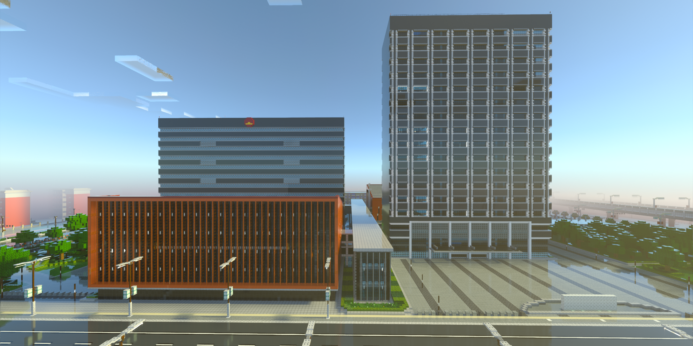
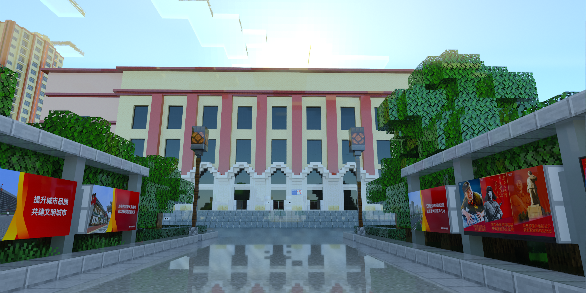
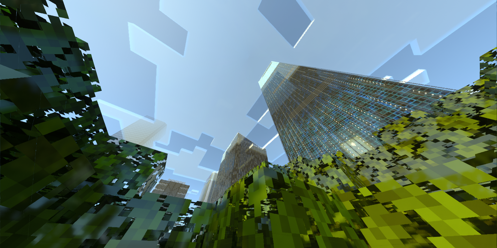
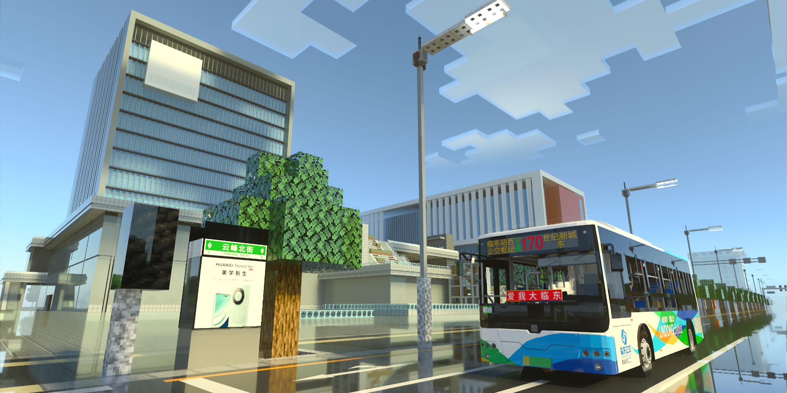
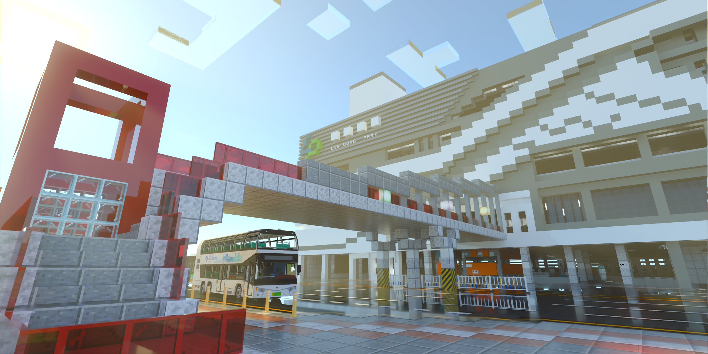
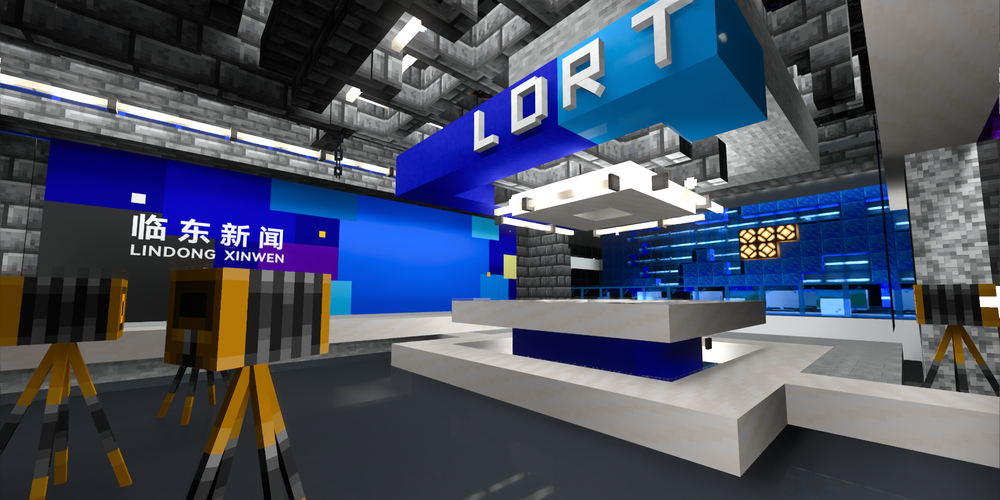
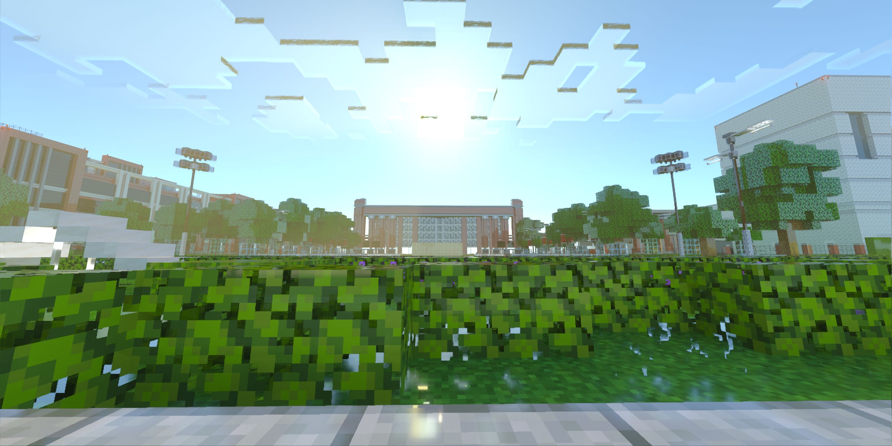

这是本市首次以书面文件的形式发布年度报告。我们希望吸取以往的经验教训、省去繁文缛节，以更为准确、直观、高效的方式，向各位玩家、群员以及关注临东发展的朋友们介绍本市2025年的发展变化。
2025年是临东市建市的第九个年头。九年以来，我们在上小官和服务器管理委员会的带领下，坚持以服务器的存续和城市的整体面貌为重，展开了一系列非同凡响的开服、建群、建设活动。白名单玩家数量稳步增长，城市面貌日新月异。九年的沧桑巨变，诸君有目共睹。
历经九年时间，临东的点点滴滴业已成为我们所有人共同的精神财富。我们感谢诸君一如既往地对临东和我们这个小圈子的关心和支持，并在此祈愿我们的友谊地久天长。
正如服管会在《2023年年度报告》中所提到的，临东的理念在于“让每一位玩家找到归属，让每一个梦想照进现实”，我们一定要按照这个理念，把我们的事情——无论是在游戏中还是现实中的事情——一一做稳做好。
今年的《年度报告》将继续贯彻如上的理念，总结好上一年我们做了什么，并就未来的变化，阐述我们的核心理念和发展目标。

我们必须牢记“7.12特别重大安全事故”的惨痛教训，深刻意识到服务器的稳定运行是一切建设活动的基础。
模组、资源包、加载项的正常运行均以特定的游戏版本为基础。从全局来看，本市目前所采用的1.20.1版本，是最符合本市需要的游戏版本。
2025年，外部环境发生极其深刻变化。美国微软公司（Microsoft Corporation）及其旗下企业为推行其所谓的版本更新计划，专横跋扈、倒行逆施，强行移除“关闭自动更新”选项，对本市的发展乃至本市的存续构成极其重大的现实威胁。我们在此强烈谴责微软公司不顾广大玩家感受一意孤行，并呼吁其立即取消有关措施。
面对危机，我们必须做好充足的准备。我们坚守1.20.1版本，并加速推进一项关键技术的研发，以有效应对外部环境变化带来的风险。如遇事变，我们亦具备条件将本市全面迁移至Java版服务器。
迁移至Java版的代价必定是沉重的，但从当前形势来看，事变仍是小概率事件。服管会将与各位玩家共同努力，全力保障临东服务器的安全与稳定，请各位玩家放心。
本市目前辖有宣庆区、铁西区、城海区、北关岭区、沙泉市、新庄县、兴县，共“四区两县一市”七大行政区划。这一发展格局由服管会综合城市远景规划与实际发展需求制定，必须长期坚持。
2025年，各行政区划的发展定位在实际建设中更加明确。城海开发区在玩家段冰峰的主导下取得了显著进步；金桦机场在玩家木棉的主导下已初具规模；铁西汽车城工程稳步推进，铁西工业之都蓄势待发；雪乡继续发挥其作为旅游胜地的优势，吸引了广大游客。
地方发展工程的推进离不开广大玩家的支持。其详细情况将在“实事求是，全力建设”章节中介绍，此处不再赘述。
为加强主城区与郊区的联动，本市将全面推进地铁3号线延长线建设，并新开通多条公交线路，有效缩短区域间通勤时间，推动各区同频共振、协同发展。
2025年，服管会发言人发表了谈话，呼吁共同维护线路运营秩序，确立了新开线路须严格按照公告格式安装站牌的原则。这项原则的确立，反映了本市公共交通业界长期存在的现实矛盾。
2025服管会已多次对公共交通线路运营做出规范，上一次做出类似表态是在2024年，服管会就"私营铁路"问题发表谈话。历史经验表明，在Minecraft 服务器的管理中，任由交通线路无序发展，往往导致建设项目虎头蛇尾，最终引发管理混乱与玩家冲突。为此，服管会将持续引导和调整交通线路布局，确保其符合服务器整体发展规划。
临东市服务器是兼容并包的自由的服务器，亦是以规则和秩序为基础运作的服务器。在今后的管理事务中，服管会将继续发挥和解与调解的作用，促进社区和谐。

2025年2月，本市对政务核心区实施了全面升级改造。此次改造以提升地区形象、优化行政效能、增强公共服务能力为目标，显著改善了区域整体风貌，为服务器管理委员会及市级机关提供了更加高效、舒适、现代化的办公环境。
项目由板桥市政集团牵头建设，以“规划大厦重建工程”为核心，统筹推进多项重点子工程。新政务核心区集办事咨询、玩家接待、资料存档等功能于一体，实现“一站式”服务；整修了市府广场铺装、增设景观照明与休憩设施，强化了政务区的公共属性与亲和力。
在政务核心区改造工程的带动下，本市掀起了早期建成区全面改造的潮流，城市品质得到了显著改善。
李家坎地区作为原有建成区的金融机构与外事机构聚集地，是本次改造的重中之重。在服管会和板桥市政集团部署下，决定将李家坎地区提升为本市的中央商务区。
板桥市政集团充分考察了国内外先进中央商务区建设经验，重点借鉴了南京市河西新城中央商务区，合肥市中央商务区等的规划理念，结合本市实际，科学制定《李家坎中央商务区高质量发展规划》，确保高起点规划、高标准建设、高水平运营。
李家坎地区在2025年6月-12月间建成了如下标志性项目：
李家坎中央商务区的建成，有效激发了区域投资活力。截至2025年12月底，已吸引包括回南控股、临川集团等5家头部企业总部入驻，招商引资成效显著，成为全市经济增长新引擎。
李家坎商务区通过现代化建筑群、智能化基础设施、生态化公共空间的有机融合，大幅提升了本市天际线与整体形象，成为展示本市开放包容、创新活力的重要窗口，市民满意度和城市美誉度持续攀升。

铁西区作为本市传统工业转型示范区，2025年继续推进产城融合与文化重塑，全面推进建成区城市更新和新建区开发拓荒。
2025年，铁西区重点推进以下建设项目：
铁西老城区更新与复原项目坚持“留改拆”并举，保留原有街巷肌理与工业记忆元素，植入文化创意、特色餐饮、社区书店、青年创客空间等新兴业态。打造兼具历史底蕴与时尚气息的社区生活圈样板。有关项目的推进为本市未来的发展积累了非常宝贵的经验，进而缓解了本市实际建设中新式建筑理念与旧式建筑风格之间的矛盾。

城海区作为建市以来确立的首个经济开发区，立足“生态立区、门户强区、文旅兴区”战略定位，2025年聚焦基建短板和历史遗留问题，高质量建成了一批支撑性、引领性项目。
2025年，氷峰实业集团深度参与了城海区的开发建设工作。以4月五间房公交枢纽的启用为契机，接连建设了一系列重点项目：
2025年，本市全面重启金桦机场的建设工作。在玩家木棉的统筹主导下，项目团队在城海区南部选址，参考了沈阳桃仙国际机场，系统研习其航站楼流线设计、跑道安全标准、智慧调度系统及文旅融合服务模式。现已基本完成跑道铺设和1号航站楼、2号航站楼的主体结构建设。
2025年，本市在城市建设领域硕果累累、亮点纷呈。囿于篇幅所限，本文仅择其代表性项目予以介绍。未能一一详述之处，敬请各位玩家海涵——须知，正是每一位玩家的智慧与创造，才让临东这座虚拟之城始终充满生机与可能。

本市既致力于提高虚拟世界公共服务质量，营造真实的城市生活氛围；又敢于顺应现实时代潮流，破旧立新，促进更多技术成果问世，让玩家在游玩过程中获得乐趣，让开发者在开发过程中收获成就感。2025年，本市依托生成式人工智能技术，成功打造并正式上线了集游戏内实时公交与地铁查询、游戏外宣传物料智能生成、城市文化数字传播等功能于一体的技术爆炸级公共服务平台——“雨城通”
借助雨城通强大的开发者功能，我们实现了路牌、楼牌、站牌、LCD界面等物料的批量化生产，实现了任意站点间的导航，极大地方便了临东玩家的游玩，提高了临东的技术水平。激发了社区开发热情。未来，雨城通将会推出更多样更高效的开发者功能，便利玩家和群员各方面的创作。
雨城通是临东创新精神的结晶。在以题海散人为代表的服内外技术型玩家的日夜坚持与协同攻坚下，项目从最初的一个构想逐步演变为功能完备的公共服务平台。开发者通过广泛征集玩家测试反馈，持续优化性能与体验。正是这种“源于社区、服务社区”的共创理念，让“雨城通”成为临东数字生态中最具温度与活力的基础设施。
本市积极推动雨城通技术向外辐射，致力于将其打造为开放共享的MC服务器公共服务平台范本，惠及更多圈内创作者与服务器社区。2025年，万方工艺服务器基于雨城通开发了“万方出行通”，该平台不仅复用了“雨城通”的智能导航、站点管理与动态信息显示等模块，还结合万方服务器自身城市布局与玩法特色，拓展了跨区域传送指引、公交线路排行等创新功能。本市一直致力于推动包括“雨城通”在内的新玩法，新形象（车辆除外）的共享，构建相互尊重支持的社区氛围。
临东公交文化早已成为这座城市最具辨识度和凝聚力的文化旗帜。十年来，在服内外各方的协作下，本市成功构建起了一套完备的公交车辆体系和高度还原、复杂真实的公交线网体系。2025年本市继续发扬公交文化传统，上线了多款兼具现实地域特色与技术内涵的新型公交车型，并创新性地引入了车尾屏等新技术，进一步提升了运营效率与乘客体验。
2025年，本市新上线的公交车型有：
临东的铁路文化也备受关注。2025本市成功引入MTC模组，从而结束了本市长期以来只能以原版矿车充当铁路车辆的历史，将更真实的铁路车辆与更多的铁路玩法带入了本市。
2025年，本市新上线的铁路车型有：
临东的交通文化源自各位玩家对家乡的热爱和对公共交通的关注，多年来，玩家们持续将对故土的记忆与对未来的憧憬倾注于这座虚拟城市之中。在完善以沈阳市为原型的原有交通体系的基础上，2025年本市还上线了锦州、大连等市的公交、有轨电车等多种车辆，进一步丰富了临东交通文化的地域多样性与历史纵深感。
2025年，本市持续加强对外宣传工作，进一步提升了城市影响力与关注度。2025年8月，在玩家题海散人的统筹安排下，临东广播电视台综合运用多种新型表现手法，精心摄制了一期《临东新闻》特别节目，并以联合投稿形式在哔哩哔哩（B站）平台发布，吸引了网友关注。

本市能够持续发展十年之久，离不开各位玩家、群友以及所有关心临东建设的朋友们始终如一的支持与陪伴。为诚挚感谢新老朋友的厚爱，同时进一步弘扬临东独特的城市文化，服管会决定于2026年8月20日（本市建市十周年纪念日）前后，隆重举办“庆祝临东市建市十周年”系列活动。我们将全力以赴，力求呈现一场兼具情怀、创意与雅趣的十周年盛事。
2026年开年以来，在板桥控股集团的推动下，停滞近五年的临东大学正式宣告复工。新临东大学以现实中的辽宁大学蒲河校区为蓝本，定位为文科主导型综合性211大学。目前，市政部门正协同校方及设计团队，加快推进校园总体规划与基础设施建设，力争在2026年上半年竣工，打造一座兼具学术底蕴与现代功能的标志性教育园区。
九年耕耘，一砖一瓦皆由热爱铸成；
十载将至，一草一木俱是情怀所系。
临东从来不只是一个服务器，它是我们用想象力搭建的家园，用规则守护的秩序，用友谊编织的共同体。正因有你，这座城才有了温度；正因有我们，这段旅程才值得铭记。
站在建市十周年的门槛上，前路既充满期待，也肩负使命。服管会将继续秉持“让每一位玩家找到归属，让每一个梦想照进现实”的初心，与诸君携手并肩，以更加开放的姿态、更加扎实的建设、更加温暖的联结，迎接下一个十年的到来。
愿情谊永续，愿临东长青。